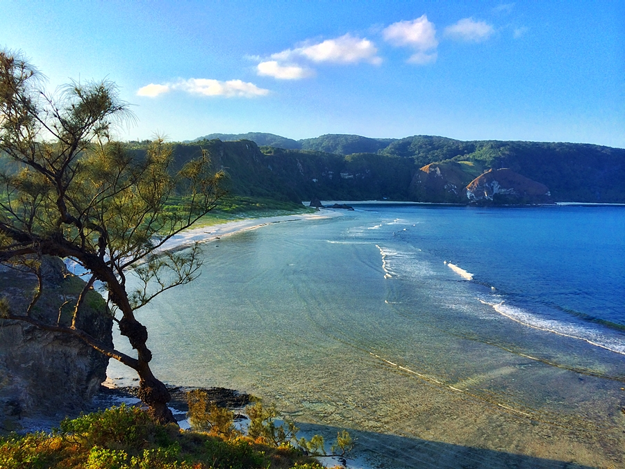
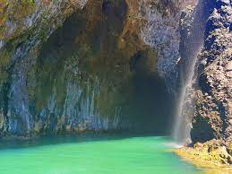

Back to Map
Babuyan

Calayan Island

Calayan Cave

Calayan Cave
Description:
The Babuyan Islands (/bɑːbəˈjɑːn/ bah-bə-YAHN), also known as the Babuyan Group of Islands,
is an archipelago in the Philippines, located in the Luzon Strait north of the main island of Luzon and south of Taiwan via Bashi Channel to Luzon Strait. The archipelago consists of five major islands and their surrounding smaller islands. These main islands are, counterclockwise starting from northeast, Babuyan, Calayan, Dalupiri, Fuga, and Camiguin. The Babuyan Islands are separated from Luzon by
the Babuyan Channel, and from the province of Batanes to the north by the Balintang Channel.